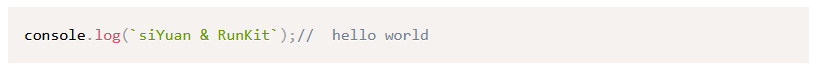
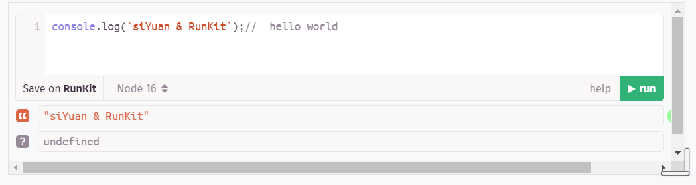
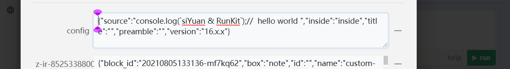
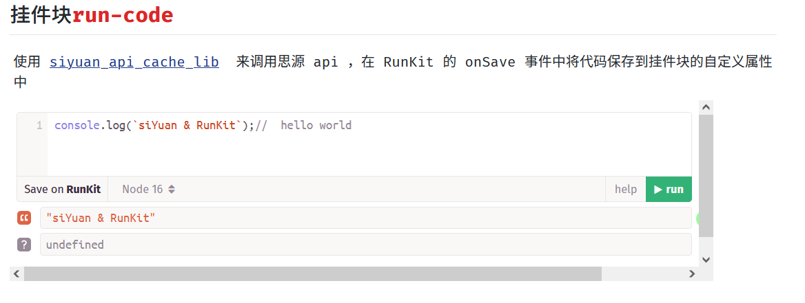

runKit未加载完毕时的样式
挂件块样式
数据存储在自定义属性中
在 OceanPress 中的效果
由于
siyuan_api_cache_lib
内使用了
self.frameElement
而
frameElement
只能在同源的情况下才能访问到
所以我在开发的时候使用 nginx 进行转发来绕过这个问题
(我使用 chrome 关闭跨域的安全策略还是无法在非同源的情况下拿到
frameElement
)
配置 iframe 的资源链接为
http://127.0.0.1/widget/run-code/
(run-code 是我在开发的插件
github.com/run-code
，建议查看这个项目里面对本库的使用方式)
对于在思源中的开发调试建议采用 nginx 进行如下配置，然后使用思源的在浏览器中打开，在这里进行开发调试
js
server {
listen 80;
server_name localhost 127.0.0.1;
location / {
#// 思源服务
proxy_pass http://127.0.0.1:6806;
index index.html index.htm;
}
location /widgets/run-code/ {
#// run-code 所启动的服务， run-code 还配置了 base 路径为 /widget/run-code/
proxy_pass http://127.0.0.1:3000;
index index.html index.htm;
}
}
对于 OceanPress 的调试可以采用如下配置
js
server {
listen 80;
server_name localhost 127.0.0.1;
location / {
#// oceanPress 生成的静态站点目录
alias 'D:/TEMP/思源test/';
}
location /widget/run-code/ {
proxy_pass http://127.0.0.1:3000;
proxy_set_header Host $host;
index index.html index.htm;
}
}
=== 没有找到对应的渲染器 NodeWidget ===